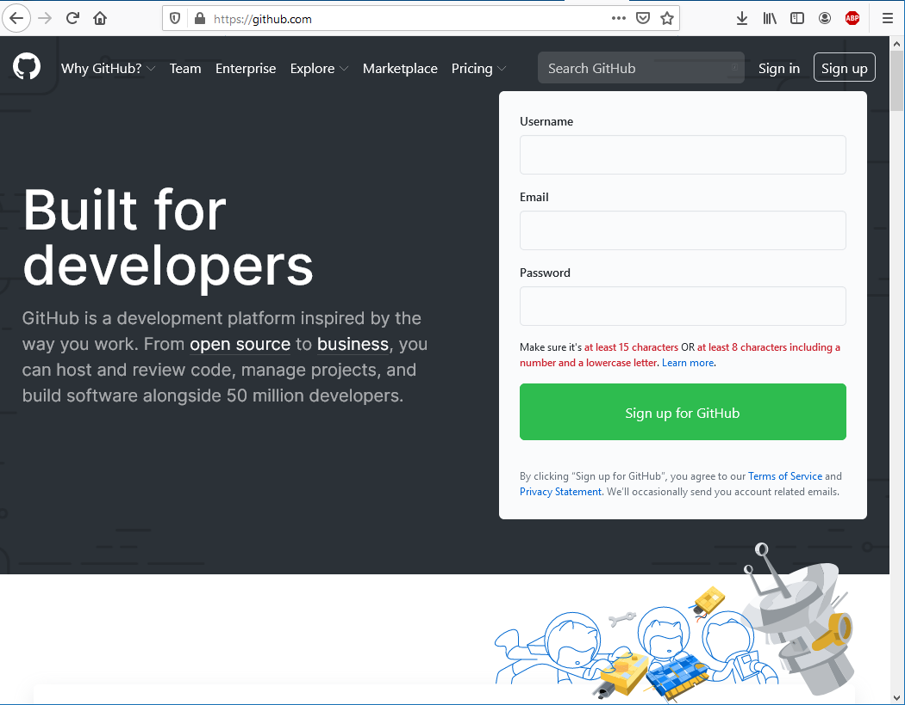

Проектний практикум. ЛР № 1
Лабораторна робота № 1
Реєстрація на Github та створення репозиторію
Мета роботи
Отримати навички створення профілю на Github та створення власних репозиторіїв
Обладнання
Персональний комп'ютер. Текстовий редактор Sublime Text 3 або Notepad++. Web-браузер Chrome, Firefox, Opera, Internet Explorer*
Хід роботи
Створити обліковий запис на Github.com

Головна сторінка Github.com
- Створити власний репозиторій, додавши у нього файл README.md
- Створити обліковий запис на GitLab.com
- Створити власний репозиторій, додавши у нього файл README.md
- Створити обліковий запис на Bitbucket.org
- Порівняти інтерфейс та функції обох систем. Виявити спільні та відмінні риси, додати порівняння у звіт в довільній формі
- Створити форк (копію) будь-якого репозиторію на Github.com
- Для кожного етапу роботи зробити знімки екрану та додати їх у звіт з описом кожного скіншота
- Дати відповіді на контрольні запитання
- Зберегти звіт у форматі PDF
Контрольні питання
- Що таке система контролю (управління) версій?
- Які СКВ ви знаєте?
- Які можливості надають Gihub, Gitlab та Bitbucket?
- Які дії неохідно виконати для створення репозиторію Gihub?
- Які дії неохідно виконати для створення репозиторію Bitbucket?
- Як ви розумієте термін Fork?
* — на випадок, якщо ви прибулець з 90-х років.